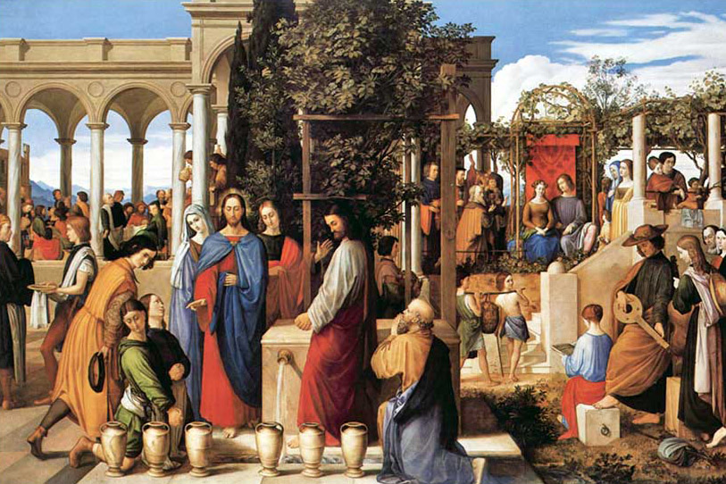

Leitura Orante
Leituras do Dia
Segunda - feira - 28ª Semana do Tempo Comum Solenidade de Nossa Senhora Aparecida
(Branco - Ofício da memória)
12 de outubro de 2020
Leitura Orante do Evangelho
Ouça o áudio da oração e reflexão do padre Francisco das Chagas


Oração do dia
Ó Deus todo poderoso, ao rendermos culto à Imaculada Conceição de Maria, Mãe de Deus e Senhora nossa, concedei que o povo brasileiro, fiel à sua vocação e vivendo na paz e na justiça, possa chegar um dia à pátria definitiva. Por nosso Senhor Jesus Cristo, vosso Filho, na unidade do Espírito Santo.
Leitura: Jó 19,21-27
1bEster revestiu-se com vestes de rainha e foi colocar-se no vestíbulo interno do palácio real, frente à residência do rei. O rei estava sentado no trono real, na sala do trono, frente à entrada. 2Ao ver a rainha Ester parada no vestíbulo, olhou para ela com agrado e estendeu-lhe o cetro de ouro que tinha na mão, e Ester aproximou-se para tocar a ponta do cetro. 7,2bEntão, o rei lhe disse: "O que me pedes, Ester; o que queres que eu faça? Ainda que me pedisses a metade do meu reino, ela te seria concedida". 3Ester respondeu-lhe: "Se ganhei as tuas boas graças, ó rei, e se for de teu agrado, concede-me a vida - eis o meu pedido! - e a vida do meu povo - eis o meu desejo! Palavra do Senhor.
Salmo Responsorial: 44(45)
Escutai, minha filha, olhai, ouvi isto: que o rei se encante com vossa beleza!
Escutai, minha filha, olhai, ouvi isto: “Esquecei vosso povo e a casa paterna! Que o rei se encante com vossa beleza! Prestai-lhe homenagem: é vosso senhor!.
Escutai, minha filha, olhai, ouvi isto: que o rei se encante com vossa beleza!
O povo de Tiro vos traz seus presentes,os grandes do povo vos pedem favores. Majestosa, a princesa real vem chegando, vestida de ricos brocados de ouro.
Escutai, minha filha, olhai, ouvi isto: que o rei se encante com vossa beleza!
3. Em vestes vistosas ao rei se dirige, e as virgens amigas lhe formam cortejo; entre cantos de festa e com grande alegria, ingressam, então, no palácio real”.
Escutai, minha filha, olhai, ouvi isto: que o rei se encante com vossa beleza!Segunda Leitura: Apocalipse 12,1.5.13.15-16
1Apareceu no céu um grande sinal: uma mulher vestida do sol, tendo a lua debaixo dos pés e, sobre a cabeça, uma coroa de doze estrelas. 5E ela deu à luz um filho homem, que veio para governar todas as nações com cetro de ferro. Mas o filho foi levado para junto de Deus e do seu trono. 13Quando viu que tinha sido expulso para a terra, o dragão começou a perseguir a mulher que tinha dado à luz o menino. 15A serpente, então, vomitou como um rio de água atrás da mulher a fim de a submergir. 16A terra, porém, veio em socorro da mulher. – Palavra do Senhor.
Evangelho: João 2,1-11
Naquele tempo, 1houve um casamento em Caná da Galileia. A mãe de Jesus estava presente. 2Também Jesus e seus discípulos tinham sido convidados para o casamento. 3Como o vinho veio a faltar, a mãe de Jesus lhe disse: “Eles não têm mais vinho”. 4Jesus respondeu-lhe: “Mulher, por que dizes isso a mim? Minha hora ainda não chegou”. 5Sua mãe disse aos que estavam servindo: “Fazei o que ele vos disser”. 6Estavam seis talhas de pedra colocadas aí para a purificação que os judeus costumam fazer. Em cada uma delas cabiam mais ou menos cem litros. 7Jesus disse aos que estavam servindo: “Enchei as talhas de água”. Encheram-nas até a boca. 8Jesus disse: “Agora tirai e levai ao mestre-sala”. E eles levaram. 9O mestre-sala experimentou a água, que se tinha transformado em vinho. Ele não sabia de onde vinha, mas os que estavam servindo sabiam, pois eram eles que tinham tirado a água. 10O mestre-sala chamou então o noivo e lhe disse: “Todo o mundo serve primeiro o vinho melhor e, quando os convidados já estão embriagados, serve o vinho menos bom. Mas tu guardaste o vinho melhor até agora!” 11Este foi o início dos sinais de Jesus. Ele o realizou em Caná da Galileia e manifestou a sua glória, e seus discípulos creram nele. – Palavra da salvação.
Leituras do mês
TAGS
missao Amazonia evengel covid-19 indigenas novica papa francisco
Destaques
Província Stella Matutina
Rua São Benedito, 2146 - Santo Amaro - São Paulo - SP |
Tel. (11)
5547-7222


Província Spiritus Divinae Sapientiae
Rua Arnaldo Janssen, 320 - Cara-Cara - Ponta Grossa - PR |
Tel. (42) 3326 4091